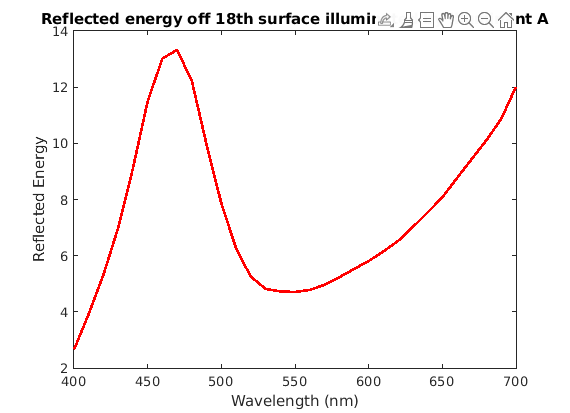
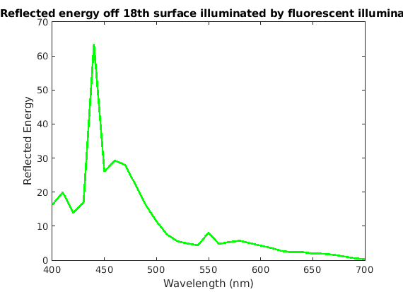
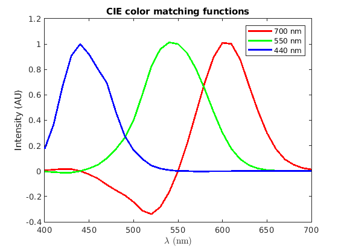
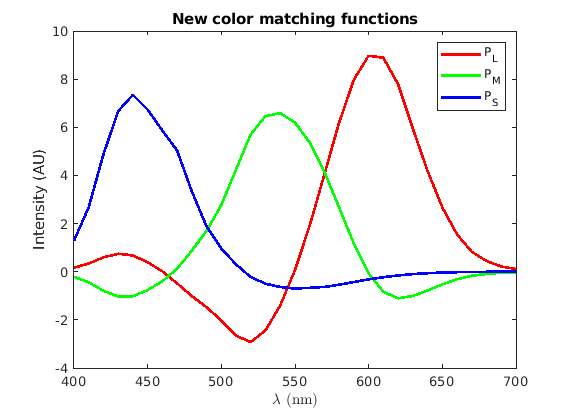

Contents
clear; clc; close all; % Loading all the datasets load surfaces; load illuminants; load cones; load phosphors;
Q1
First a linear vector is created using linspace to list a range of wavelengths between 400 and 700 nm to map the visual spectrum. A standard size of 31 spacings is used which ensures a 10 nm step size.
spectrum = linspace(400, 700, 31);
a)
The SPD of illuminant A is given by cie_a which is 1 * 31 and the 18th macbeth surface reflectance is stored in the 18th row of macbeth matrix which has a shape of 1 * 31. Therefore, value-by-value multiplication of macbeth 18th row and cie_a is performed to compute the spectral signal reaching the eye. To ensure that the resulting spectral signal is a column vector, both the macbeth 18th row and the cia_a are transposed before computing the product
spectral_signal_18_ciea = macbeth(18, :)' .* cie_a'; figure; plot(spectrum,spectral_signal_18_ciea,'r', 'LineWidth', 2); xlabel('Wavelength (nm)'); ylabel('Reflected Energy'); title('Reflected energy off 18th surface illuminated by illuminant A')
b)
Similar to (a), the 18th macbeth surface vector is multiplied by the SPD of the fluorescent light to compute the spectral signal reaching the eye
spectral_signal_18_fluroescent = macbeth(18, :)' .* flourescent'; figure; plot(spectrum,spectral_signal_18_fluroescent,'g', 'LineWidth', 2); xlabel('Wavelength (nm)'); ylabel('Reflected Energy'); title('Reflected energy off 18th surface illuminated by fluorescent illuminant')
c)
The cone responses are the product of the matrix comprised of cone responsitivities as a function of wavelength and the spectral signal present in the incident light on the retina computed in (a) for illuminant A. The cones matrix is 3 * 31 and spectral_signal is 31 * 1 resulting in the coneResponse vector shaped 3 * 1 with values corresponding to the responses by [L M S] cones.
coneResponse_18th_ciea = cones * spectral_signal_18_ciea;
disp('The cone responses for illuminant A reflecting off 18th Macbeth surface are:')
disp(coneResponse_18th_ciea);
The cone responses for illuminant A reflecting off 18th Macbeth surface are: 65.2373 53.5643 61.9800
d)
Similar to what is done in (c), the cones matrix here is multiplied by the spectral signal for the fluorescent light from (b) and the result is a 3 * 1 coneResponse vector for the fluorescent light
coneResponse_18th_fluorescent = cones * spectral_signal_18_fluroescent;
disp('The cone responses for fluroescnet light reflecting off 18th Macbeth surface are:')
disp(coneResponse_18th_fluorescent);
The cone responses for fluroescnet light reflecting off 18th Macbeth surface are: 66.1124 68.4875 182.9654
e)
The fluorescent light will appear more blueish as the cone response of S cone is higher in case of fluorescent light compared to that for the illuminant A. S cone responds to shorter wavelengths which are interpreted as blueish by the brain.
Q2
a)
This is a color matching experiment where illuminant A acts as the test light and the monitor intensities are the knob settings of the three primaries. First the spectral signal reaching the eye when illuminant A is shined on the 1st Macbeth surface is computed in a similar way as in Q1 a, b. Next the coneResponse is computed as the matrix product of the cones and the spectralSignal similar as in Q1 c, d. Then a matrix is computed to convert the signals from phosphors to the signals from cones as a product of cones and phosphors. Since both cones and phosphors are 3 * 31, phosphors is transposed. The result is a 3 * 3 matrix. Given the linear independence of the three primaries i.e. phosphors and the responsivities of the three cones, the resultant phosphors_to_cones matrix is invertible and the inverse of this matrix gives cones_to_phosphors, a 3 * 3 matrix, that can be used to convert the signals from cones to the corresponding light intensities from the monitor. The monitorSignals can then be computed as the product of cones_to_phosphors and coneResponse
spectral_signal_1_ciea = macbeth(1, :)' .* cie_a';
coneResponse_1st_ciea = cones * spectral_signal_1_ciea;
phosphors_to_cones = cones * phosphors';
cones_to_phosphors = inv(phosphors_to_cones);
monitorSignals = cones_to_phosphors * coneResponse_1st_ciea;
disp('The monitor intensities to match the color of the 1st Macbeth surface when illuminated by illuminant A are:')
disp(monitorSignals)
The monitor intensities to match the color of the 1st Macbeth surface when illuminated by illuminant A are:
1.0e+03 *
1.7947
1.9383
0.4740
b)
Since all the intensities are greater than 0 and assuming that there is no maximum intensity limit for the light produced by the monitor, this color can be displayed on the screen
Q3
a)
The neutral signal from the monitor can be taken as [1 1 1]. To represent it as a vector, it is transposed. Then we compute the spectral signal reaching the eye by multiplying the primaries with the monitor intensities. The coneResponse is then computed by multiplying the cones matrix that hold the cone responsivity to the different wavelengths by the spectral signal reaching the eye for the neutral stimulus
spectral_signal_neutral_stimulus = phosphors' * [1 1 1]';
coneResponse_neutral_stimulus = cones * spectral_signal_neutral_stimulus;
disp('The cone responses to the neutral stimulus are:')
disp(coneResponse_neutral_stimulus)
The cone responses to the neutral stimulus are:
0.2638
0.2257
0.1591
b)
The incremenet here is taken to be [0 0 1] to bring about an increment only in the S cone response The coresponding monitor singals can be computed by multiplying the cones_to_phosphors with the coneRespones with increment
increment = [0 0 1]';
coneResponse_neutral_with_increment = coneResponse_neutral_stimulus + increment;
monitorSignals_with_increment = cones_to_phosphors * coneResponse_neutral_with_increment;
disp('Monitor signals corresponding to the increment of [0 0 1] in cone responses are:')
disp(monitorSignals_with_increment)
Monitor signals corresponding to the increment of [0 0 1] in cone responses are:
1.9637
-0.3891
8.3776
The negative monitor intensities cannot be rendered properly on the screen, thus bringing a constraint on the increment in the cone intensities that can be added. The maximum increment that can be added can be computed either by Brute-force method or by using Matrix multiplication method
i) Brute-force method
iterations = 100; format long brute_incre = [0 0.5]; for i = 1:iterations coneResponse_with_increment_brute = coneResponse_neutral_stimulus + [0 0 1]' .* brute_incre(end); monitorSignals_with_increment_brute = cones_to_phosphors * coneResponse_with_increment_brute; delta = abs((brute_incre(end) - brute_incre(end - 1)) / 2); if monitorSignals_with_increment_brute(2) < 0 change = brute_incre(end) - delta; else change = brute_incre(end) + delta; end brute_incre(end + 1) = change; end max_brute_incre = brute_incre(end); disp('The maximum increment to S-cone computed by brute-force method is:') disp(max_brute_incre);
The maximum increment to S-cone computed by brute-force method is: 0.719882591314830
ii) Matrix-multiplication method
The monitor signal (mon_sig) is the product of cones_to_phosphors (C2P) matrix and the cone signal (con_sig). Hence we have:
mon_sig (old) = C2P * con_sig (old)
and
mon_sig (new) = C2P * con_sig (new)
But con_sig (new) = con_sig (old) + increment
Thus, we have:
mon_sig (new) = C2P * [con_sig (old) + increment]
Therefore,
mon_sig (new) = C2P * con_sig (old) + C2P * increment
Therefore,
mon_sig (new) = mon_sig (old) + C2P * increment
Since mon_sig (old) = [1 1 1]'
mon_sig (new) = [1 1 1]' + C2P * increment
From the monitor signals computed above, the limiting signal that can cause issue with the rendering is the middle signal. Therefore, the maximum increment that can be made to the cone response is the one that will result in mon_sig (new) (2) = 0
Now using the definitions of matrix multiplication, we have:
mon_sig (new) (2) = 1 + C2P(2, 1) * increment(1) + C2P(2, 2) * increment(2) + C2P(2, 3) * increment(3) = 0
Since the increment is only made to the S cone, we have
increment = [0 0 x]'
Thus, we have;
0 = 1 + C2P(2, 3) * increment(3)
Therefore, -1 = C2P(2, 3) * increment(3)
Therefore, increment(3) = -1/C2P(2, 3)
Using this, we get:
format short max_incre_proper = -1/cones_to_phosphors(2, 3); disp('The maximum increment to S-cone computed by matrix-multiplication method is:') disp(max_incre_proper);
The maximum increment to S-cone computed by matrix-multiplication method is:
0.7199
c)
The conesignals after largest increment are: The coresponding monitor singals can be computed by multiplying the cones_to_phosphors with the coneRespones with the maximum increment
coneResponse_neutral_with_max_increment = coneResponse_neutral_stimulus + [0 0 max_incre_proper]';
monitorSignals_with_max_increment = cones_to_phosphors * coneResponse_neutral_with_max_increment;
disp('Monitor signals corresponding to the maximum increment in cone responses are:')
disp(monitorSignals_with_max_increment)
Monitor signals corresponding to the maximum increment in cone responses are:
1.6938
0.0000
6.3110
Q4
First step is create a matrix of primaries. P_CIE is initialized to be a 31 * 3 matrix of zeroes where the columns correspond to the intensities of primaries 1, 2, 3 respectively. In this case, primary 1 = 700 nm, primary 2 = 550 nm, primary 3 = 440 nm.
P_CIE = zeros(31, 3); desired_monochromatics = [700, 550, 440];
Next step is to update the values of the intensities for each primary. This can be done by searching the index of the particular wavelength in the spectrum vector and assigning 1 in the corresponding row for each column in the P_new.
for i = 1:size(P_CIE, 2) lambda = desired_monochromatics(i); P_new_row_index = find(spectrum == lambda); P_CIE(P_new_row_index, i) = 1; end
The intensity of 700 nm is updated to be 80 times the intensity of other two primaries for scaling the graph
P_CIE(:, 1) = 80 * P_CIE(:, 1);
A range of test lights can be created one for each wavelength in the range being sampled which can be modeled as an identity square matrix of size 31, with each column corresponding to one test light
test_light_array = eye(31);
The color matching function can then be computed using CMF = inv(CP)*C*T This will create a matrix of size 3 * 31 with each column corresponding to the knob settings for that particular wavelength.
CMF_CIE = inv(cones * P_CIE) * cones * test_light_array;
The plot of CMF is then created with the primaries colored as red, green, blue, respectively
h = plot(spectrum, CMF_CIE, 'LineWidth', 2); set(h, {'color'}, {[1 0 0 ]; [0 1 0]; [0 0 1]}) xlabel('${\lambda}$ (nm)', 'interpreter', 'latex') ylabel('Intensity (AU)') title('CIE color matching functions') legend('700 nm', '550 nm', '440 nm')
Q5
a)
Let C = cones, P_{old} = P_CIE, P_{new} = phosphors', e_{old} = CMF_CIE, e_{new} = CMF_new
The old color matching equation is:
Ct = CP_{old}e_{old}
And the new color matching equation is:
Ct = CP_{new}e_{new}
Since the perception of both the old primaries with the old settings and the new primaries with the new stting is the same, we can equate the right-hand side of the two equations
Hence, CP_{old}e_{old} = CP_{new}e_{new}
Given the invertibility of CP_{new}, we can create a new matrix old_to_new as
old_to_new = inv(CP_{new}) * (CP_{old})
Therefore, e_{new} = old_to_new * e_{old}
b)
The 3 * 3 matrix that is desired here is the old_to_new stated in (a). Substituting the matrices in the equation for old_to_new, we get:
P_old = P_CIE;
P_new = phosphors';
old_to_new = inv(cones * P_new) * (cones * P_old);
disp('The 3x3 matrix that converts the CIE color matching functions to the new color matching functions is:')
disp(old_to_new)
The 3x3 matrix that converts the CIE color matching functions to the new color matching functions is:
8.8624 0.0655 0.6738
-1.9196 6.1927 -1.0220
-0.0999 -0.6997 7.3453
The old_to_new matrix is a transformation matrix that provides weights for the conversion from the old scale to the new scale. Let W = old_to_new. Then Wij is the weight of the i_th new primary with respect to the j_th old primary
c)
The new CMF can then be computed by multiplying the old_to_new matrix and the old CMF.
CMF_new = old_to_new * CMF_CIE; h = plot(spectrum, CMF_new, 'LineWidth', 2); set(h, {'color'}, {[1 0 0 ]; [0 1 0]; [0 0 1]}) xlabel('${\lambda}$ (nm)', 'interpreter', 'latex') ylabel('Intensity (AU)') title('New color matching functions') legend('P_L', 'P_M', 'P_S')